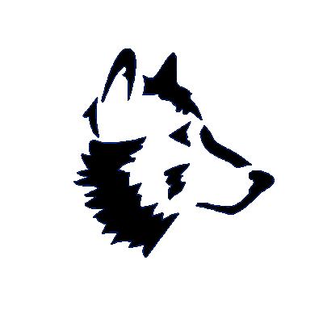

Version 2.1.2
Copyright 2011-2015 by Peter Eastman
The English spelling dictionaries were created with SCOWL 7.1, which is Copyright 2000-2011 by Kevin Atkinson.
The French, German, Portuguese, and Spanish spelling dictionaries are Copyright 2013 by the Android Open Source Project. They are distributed under the Apache License, version 2.0.